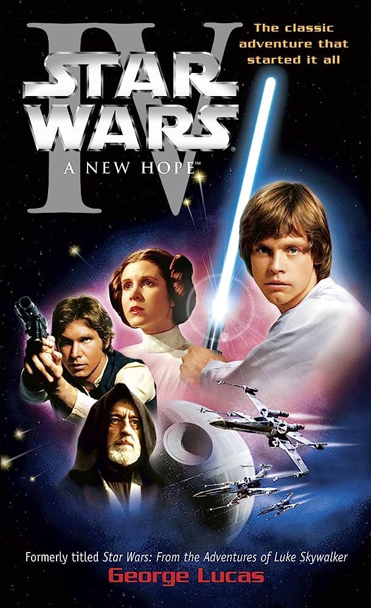

Pulp Fiction
Película de culto si las hay. Dirigida por Quentin Tarantino, estrenada en 1994. La trama no lineal sigue a un grupo de personajes interconectados en Los Ángeles y se centra en la vida de dos asesinos a sueldo, Vincent Vega (John Travolta) y Jules Winnfield (Samuel L. Jackson), quienes trabajan para el jefe de la mafia Marsellus Wallace (Ving Rhames). La película presenta una serie de historias entrelazadas, incluyendo el robo de una misteriosa maleta, la redención de un boxeador retirado llamado Butch Coolidge (Bruce Willis), y la relación de Vincent con la esposa de Marsellus, Mia Wallace (Uma Thurman).
"Pulp Fiction" se caracteriza por su estilo visual único, diálogos ingeniosos y una banda sonora icónica. La película recibió elogios de la crítica y se convirtió en un fenómeno cultural, consolidando a Tarantino como un destacado director en la industria cinematográfica.
Una anecdota. En la película, el personaje Jules Winnfield, interpretado por Samuel L. Jackson, lleva consigo una billetera que tiene la inscripción "Bad Motherfucker" ("Maldito Hijo de Puta") en ella. Esta billetera se ha convertido en un icónico objeto de la cultura pop y es reconocible para muchos fanáticos de la película.
La anécdota detrás de la billetera es que en realidad pertenecía a Quentin Tarantino, el director de la película. Tarantino la había comprado en una tienda de antigüedades antes de filmar "Pulp Fiction" y decidió usarla como un accesorio para el personaje de Jules. La billetera se ha vuelto tan icónica que incluso se ha producido y vendido como artículo de merchandising para los fanáticos de la película.
Star Wars: Episodio IV - Una Nueva Esperanza
Por Ruli Roldán
"Star Wars: Episodio IV - Una Nueva Esperanza" es indiscutiblemente una obra maestra del cine que ha trascendido generaciones. Con su cautivadora historia de heroísmo y aventura espacial, nos transporta a un universo lleno de personajes inolvidables como Luke Skywalker, la valiente princesa Leia y el inolvidable Han Solo. La película nos sumerge en un viaje épico de luchas entre el bien y el mal, donde la Fuerza guía a los protagonistas hacia un emocionante clímax. Su innovadora utilización de efectos especiales y su magnífica banda sonora de John Williams la convierten en un hito cinematográfico que ha dejado una huella imborrable en la cultura popular y en nuestros corazones. Es un legado que continúa inspirando a generaciones de fanáticos en todo el mundo, y eso es lo que hace a "Star Wars: Episodio IV - Una Nueva Esperanza" simplemente lo mejor que hay.
En la inmortal galaxia de "Star Wars: Episodio IV - Una nueva esperanza," el inglés se convierte en el telón lingüístico principal sobre el cual se teje la épica narrativa. Sin embargo, como destellos de constelaciones lingüísticas, emergen idiomas ficticios que confieren profundidad a este universo galáctico. Desde el Básico (Galáctico Común), el lenguaje compartido por las estirpes interplanetarias, hasta el Huttese que fluye en los oscuros recovecos criminales. En las arenas de Tatooine, el Jawaese de los comerciantes de chatarra se entrelaza con el Shyriiwook, el rugido del alma de los Wookiees. Y en la comunión binaria de pitidos y bleeps, los droides dialogan en su propio idioma, insinuando una sinfonía tecnológica. A través de doblajes y subtitulados, esta obra maestra ha trascendido las fronteras galácticas, llevando la diversidad lingüística a cada rincón de la Tierra, mientras que ediciones especiales han añadido un matiz único a esta sinfonía universal de lenguajes.
